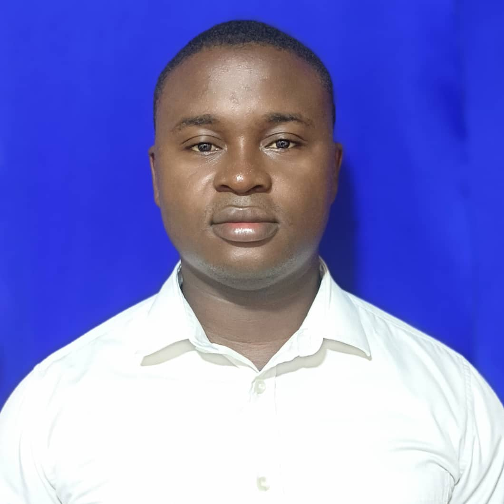

Angelus Akomiah Sackey | WDD 130
Hello! My name is Angelus Akomiah Sackey, and I am from Ghana, in the West of Africa. I am currently pursuing my BS in Applied Technology and am in the final phase of completing my certificate. I come from a family of five, which includes my wife and three children. Being a part of the BYU-Idaho online school community has been a great experience for me, and I have learned a lot since I started this journey in September 2019. It has been a blessing for me. Despite being a full-time employee, a Bishop, and an online student, I manage to stay busy and focused. Trusting in the Lord and having a growth mindset has been key to my success